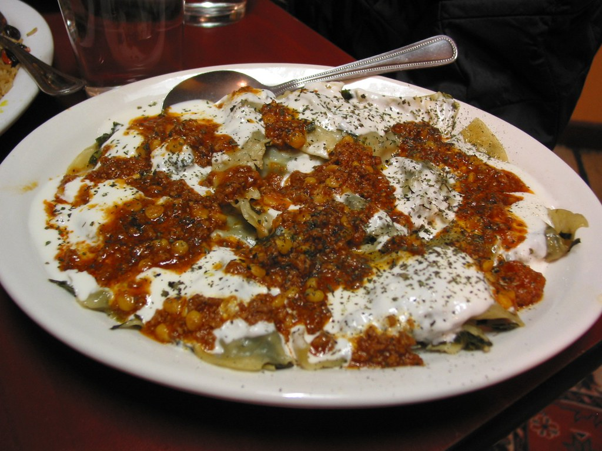
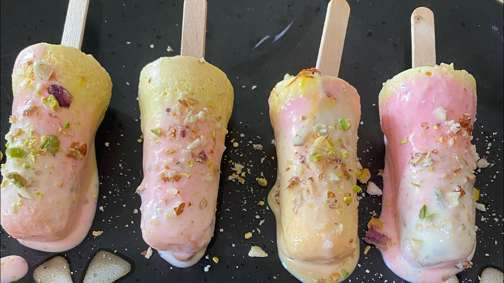
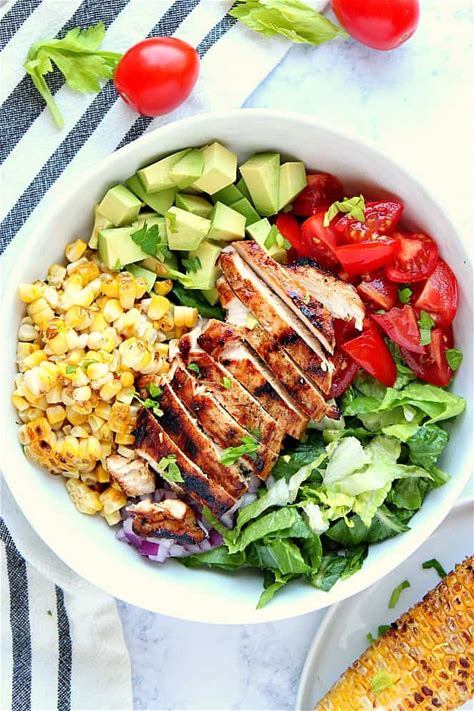
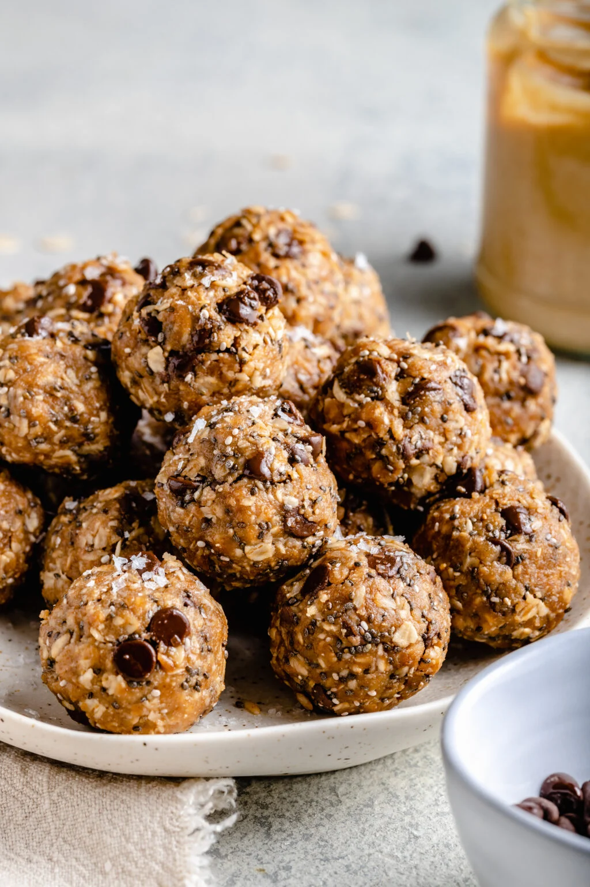

Ultimate Veggie Pizza

Ingredients:
- 1 pound pizza dough
- 1 cup pizza sauce
- 1 tablespoon olive oil
- 8 ounces cremini mushrooms, sliced
- 1 clove garlic, minced
- Kosher salt and black pepper
- 3 cups shredded low-moisture part-skim mozzarella cheese
- ½ cup canned artichoke hearts, chopped
- ½ cup roasted red bell peppers, sliced
- ½ cup red onion, thinly sliced
- ½ cup black olives, sliced
- Fresh basil leaves, crushed red pepper flakes, and grated Parmesan cheesefor garnish
Instruction:
- Preheat the oven to 500°F and place a pizza stone inside.
- Divide the pizza dough into two pieces and let it rest on a floured surface.
- Heat olive oil in a skillet, cook mushrooms until tender, and stir in garlic. Season with salt and pepper
- Stretch the dough into a 10-12 inch circle and spread pizza sauce, leaving a 1 inch border.
- Add mozzarella cheese and toppings like mushrooms, artichokes, peppers, onions, and oviles.
- Tranfer the pizza onto the hot pizza stone and bake for 8-15 minutes until the crust is golden and cheese is melted.
- Garnish with basil, red pepper flakes, and paemesan cheese before serving.
Silky Garlic Chive Aushak
(Afghan Dumplings)

Ingredients:
- 1 Pack dumplings wrappers
- 1 cup garlic chives, chopped
- 1 tsp salt
- 1 tbsp oil
- 1 cup yogurt
- 1/2 cup tomato sauce
- 1 tsp dried mint
Instruction:
- Fill dumplings wrappers with chopped garlic chives and seal them tightly.
- Boils water and cook dumplings for about 5 minutes.
- mix yogurt with dried mint for the sauce.
- Heat tomato sauce with spices and pour over dumplings.
- Serve with yogurt sauce and garnish with fresh herbs.
Classic Oreo Cookie Shake
(Creamy & Indulgent)

Ingredients:
- 6 Oreo cookies
- 2 cups chilled milk
- scoops vanilla ice cream
- tbsp chocolate syrup (optional)
- Whipped cream for topping (optional)
- Extra crushed Oreos for garnish
Instruction:
- Crush Oreo cookies and add them to a blender.
- Pour in the chilled milk, vanilla ice cream, and chocolate syrup (if using).
- Blend until smooth and creamy.
- Pour into a glass and top with whipped cream and crushed Oreos.
- Serve immediately and enjoy this rich, chocolatey shake!
Irresistibly Rich Afghan Qabuli Pulao

Ingredients:
- 2 cups basmati rice
- 500g lamb/beef
- 1/2 cup raisins
- 1 carrot, julienned
- 1 onion sliced
- 2 tbsp vegetable oil
- Spices: cardamom, Cumin, Cinnamon, and salt
Instruction:
- Cook the lambs with teh onions and spices until tender.
- Perboil the rice abd layer it over the lamb in a pot.
- Top with sauteed carrots and raisins.
- Steam tey dish on low heat until fully cooked.
- Serve and enjoy this flavorful Afghan dish!
Crispy Gloden Bolani
(Afghan Stuffed Flatbread)

Ingredients
- 2 cups all-purpose flour
- 1 cup mashed potatoes
- 1/2 tsp salt
- 1/2 tsp black pepper
- 1/2 tsp cumin
- 2 tbsp chopped cilantro
- 2 tbsp vegetable oil
Instruction:
- Mix flour with water to form a soft dough and let it rest for 30 minutes.
- Combine mashed potatoes with spices and herbs to create the filling.
- Roll out the dough into thin circles and spread the filling evenly.
- Fold and seal the edges, then pan-fry with oil until crispy and golden brown.
- Serve with yogurt or chutney.
Classic saffron kulfi
(Frozen ice cream)

Ingredients:
- 2 Cups full-Fat milk
- 1/2 cup condensed mil
- 1/4 tsp saffron threads
- 1 tbsp chopped pistachios
- 1 tbsp sugar
Instruction:
- heat the milk and simmer until reduce by half.
- add saffron, condensed mil, and sugar.
- Stir and let cool before pouring into molds.
- freeze for at least 6 hours, garnish with pistachios, and serve.
Spiced Royal Samosa
(Crispy Pastry Pockets)
Ingredients:
- 2 cups all-purpose flour
- 1/2 cup ground beef or potatoes
- 1 tsp cumin
- 1/2 tsp turmeric
- 1 onion, finely chopped
- 2 tbsp oil
Instruction:
- Prepare a dough with flour,watre, and salt; let it rest.
- cook filling(beef or potatoes) with onions and spices until fragrant.
- Roll out dough,cu into small pices,and fill with mixture.
- Fold and seal the edges, then deep-fry until golden brown.
- Serve hot with chutney.
Grilled Chicken Salad

Ingredients:
- 2 cups lettuce or mixed greens
- 1 grilled chicken breast (sliced or cubed)
- 1/2 cup cherry tomatoes (halved)
- 1/4 cup cucumber (sliced)
- 1/4 cup red onion (thinly sliced)
- 1/4 cup shredded carrots
- 2 tbsp croutons
- Dressing of choice (ranch, vinaigrette, or honey mustard)
- Optional: avocado slices or boiled egg
Instruction:
- Wash and chop lettuce, cherry tomatoes, cucumber, red onion, and carrots
- Seson the chicken breast with salt, pepper, and ovile oil, then grill or pan-sear until fully cokked. slice or cube it.
- In a large bowl, layer the lettuce as the base, then add grilled chicken, vegetables, and croutons.
- Drizzle dressin over the salad or serve it on the side.
- garnish with Optional toppings like avocado slices or boiled egg. Serve fresh and enjoy!
Vegan Panna Cotta

Ingredients:
- 2 cups mixed fresh berries (strawberries, blueberries, raspberries, blackberries)
- 2 tbsp sugar or honey
- 1 tbsp lemon juice or orange juice
- 1 tsp vanilla extract (optional)
- Fresh mint leaves for garnish
Instruction:
- Wash and gently pat dry all the fresh berries. Slice strawberries into halves or quarters if needed.
- Place the berries in a large mixing bowl. Sprinkle sugar or drizzle honey over them.
- Add lemon or orange juice and vanilla extract (optional) to the bowl. Toss the berries gently to ensure everything is evenly coated.
- Cover the bowl and allow the mixture to sit at room tempreture for 15-30 minutes.
during the time, the berries will release their juice and absorb the flavors.
- Before serving, garnishwith fresh mint leaves for decorative touch and added freshness.
Peanut Butter Energy Balls

Ingredients:
- 1 cup rolled oats
- ½ cup peanut butter
- ¼ cup honey
- ¼ cup mini chocolate chips
- 2 tablespoons ground flaxseed
Instruction:
- Combine oats, peanut butter, honey, chocolate chips, and flaxseed in a bowl.
- Mix until the ingredients are well combined.
- Roll the mixture into bite-sizes balls using your hands.
- Refrigerate for 30 minutes to set.
- Enjoy!
Peach and Iced tea

Ingredients:
- 4 ripe peaches (3 chopped, 1 sliced for garnish)
- 4 black tea bags
- 1 cup sugar
- 4 cups water
- Ice cubes
Instruction:
- Boil 2 cups of water and steep the tea bags for 5 minutes. Remove the tea bags and let tea cool.
- In saucepan, combine chopped peaches, sugar, and 1 cup water. simmer until the peaches are soft, then mash them to realease their juices.
- Strain teh peach mixture through a fine sieve to make peach syrup.
- Combine the cooled tea, peach syrup, and 1 cup of cold water in a pitcher, Stir well.
- Serve over ice and garnish with peach slices.
Spicy Chicken Wrap Roll

Ingredients:
- Boneless chicken (sliced)
- Garlic (minced)
- Ginger paste
- Yogurt
- Lemon juice
- Red chili powder
- Cumin powder
- Salt
- Oil
- Paratha or tortil
- Sliced onions
- Green chutney
Instruction:
- Marinate chicken with garlic, ginger paste, yogurt, lemon juice, chili powder, cumin, and salt for 30 minutes.
- Heat oil in a pan and cook the Marinated chicken until tender.
- Warm the paratha or tortilla and spred green chutney.
- Roll it up tightly and serve.
Prapared by: Suhaila Rahimi
Rate Us: